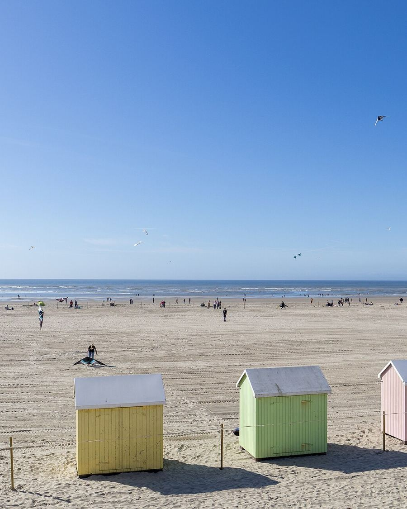
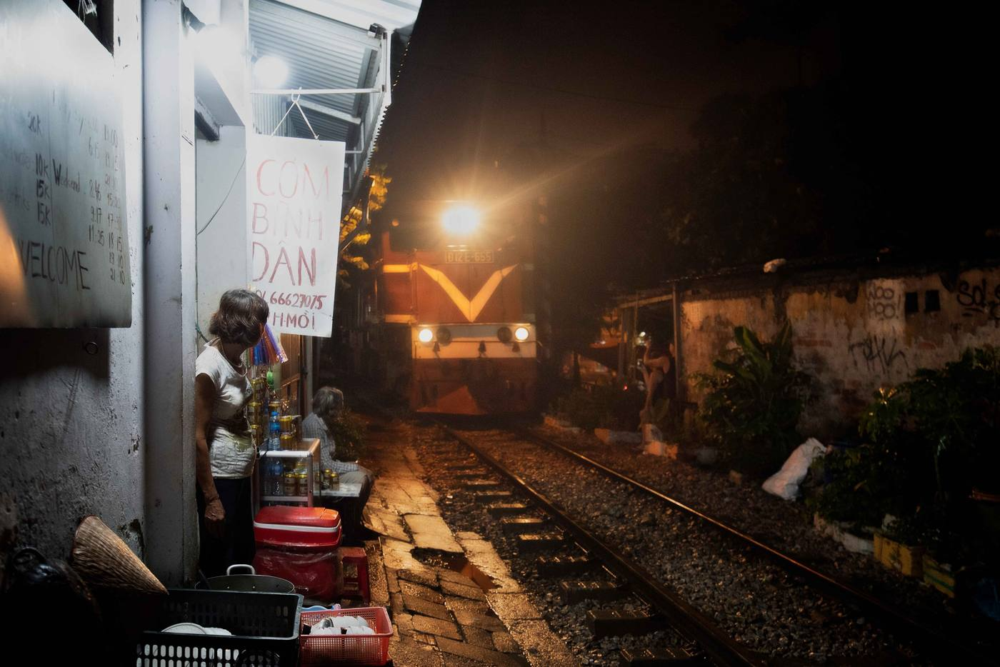

Igor
Belyaev
Igor Belyaev
Étudiant en informatique · Cloud & DevOps
Faites défiler pour entrer
L3 Informatique
Lille × Hanoï
À propos
Je m'intéresse à ce qui se passe une fois le code écrit : le déployer, le surveiller, le faire tenir quand le trafic augmente.
Je suis en troisième année de licence d'informatique, en double diplôme entre l'Université de Lille et l'USTH, à Hanoï.
C'est en cours de réseaux que j'ai compris que l'infrastructure m'attirait plus que l'application elle-même. Je vise un master orienté cloud et DevOps.
Parcours · 2020 — 2023
Berck

Baccalauréat général
Lycée Jan Lavezzari
Berck — Amiens — Lille — Hanoï — Master
Parcours · 2023 — 2024
Amiens

Classe préparatoire MP2I
Lycée Louis Thuillier
Berck — Amiens — Lille — Hanoï — Master
Parcours · 2024 — 2026
Lille

Licence 1 Informatique – Mathématiques, puis Licence 2 Informatique
Université de Lille
Berck — Amiens — Lille — Hanoï — Master
Parcours · 2026 — 2027 · en ce moment
Hanoï

Licence 3 Informatique, double diplôme
Université de Lille × USTH
Berck — Amiens — Lille — Hanoï — Master
Parcours · 2027 —
Master
La suite : un master orienté cloud et DevOps
Candidatures en préparation
Berck — Amiens — Lille — Hanoï — Master
Compétences
Je pratique
Java
SQL
Linux
Git
J'apprends
Docker
nginx
GitHub Actions
Langues
Russe langue maternelle · Français C1 · Anglais B2
Photos
En dehors de l'écran, je fais de la photo. Ces images sont provisoires, les miennes arrivent.





01 / 08
Push — Build — Test — Publish
À chaque git push, ce site se reconstruit, se teste et se publie tout seul.
Écrit à la main, sans framework. GitHub Actions valide le HTML, construit une image Docker (nginx sans les droits root, conteneur en lecture seule), la teste, la publie sur ghcr.io, puis met la page en ligne sur GitHub Pages.
Chaque image porte le hash de son commit. Version affichée :
copie locale.
Voir le code sur GitHub
Contact
Une question sur mon parcours, un stage, un projet ? Écrivez-moi.